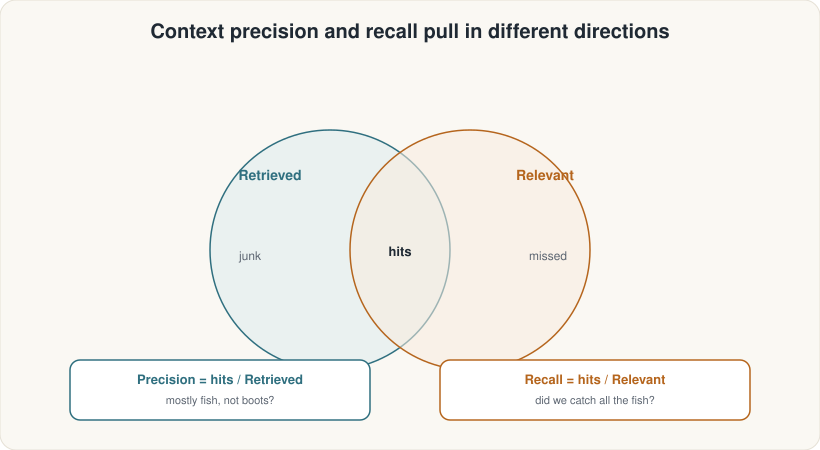

ASDRP · Agentic RAG Track · Module 07
Score your retriever with two complementary RAGAS metrics — context precision and context recall — and learn to read what each number is really telling you.
What we'll cover
Retriever evaluation

Intuition
Both numbers are needed. A system with 0.9 precision and 0.4 recall is broken in a different, equally serious way from one with 0.4 precision and 0.9 recall.
LLMContextPrecisionWithReference
from ragas.metrics import LLMContextPrecisionWithReference
# RAGAS sends each (question, chunk, reference) triple to the judge LLM
# and asks: "Is this chunk useful for answering the question given this reference?"
# It weights the verdicts by position — top-ranked relevant chunks score higher.
metric = LLMContextPrecisionWithReference(llm=judge_llm)
user_input — the questionretrieved_contexts — list of chunks the retriever returnedreference — the gold-standard reference answerLLMContextRecall
from ragas.metrics import LLMContextRecall
# RAGAS decomposes the reference answer into individual statements,
# then checks each statement: "Is there a retrieved chunk that supports this?"
# Recall = fraction of reference statements that are covered.
metric = LLMContextRecall(llm=judge_llm)
user_input — the questionretrieved_contexts — list of chunks the retriever returnedreference — the gold-standard reference answer (decomposed into statements)Comparison
| Property | LLMContextPrecisionWithReference | LLMContextRecall |
|---|---|---|
| Question it answers | "Are retrieved chunks relevant and well-ordered?" | "Did we retrieve all the needed information?" |
| Compares against | Reference answer (for relevance verdict) | Reference answer statements (coverage check) |
| Sensitive to ranking? | Yes — position-weighted | No — only cares about presence, not order |
| Hurt by too few chunks? | No (fewer is often better) | Yes — missed evidence lowers recall |
| Hurt by noisy chunks? | Yes — irrelevant chunks at top = low score | No — extra noise is ignored |
Step 0 · Setup
import os
from dotenv import load_dotenv, find_dotenv
load_dotenv(find_dotenv()) # resolves to tutorials/.env
HAVE_KEYS = bool(os.environ.get("OLLAMA_API_KEY"))
# RAGAS 0.4.3 import stub — must come BEFORE importing ragas
import sys, types
_vx = types.ModuleType("langchain_community.chat_models.vertexai")
class ChatVertexAI: pass
_vx.ChatVertexAI = ChatVertexAI
sys.modules["langchain_community.chat_models.vertexai"] = _vx
import nest_asyncio; nest_asyncio.apply() # RAGAS uses asyncio; notebooks already run a loop
evaluate() call sends each (question × chunk) pair to the judge LLM. With 8 golden questions and k=10 chunks each, that is ~80 LLM calls per metric. Keep k small during development.
Step 1 · RAGAS models
import litellm
from ragas.llms import llm_factory
from ragas.embeddings.base import embedding_factory
JUDGE_MODEL = "ollama_chat/gemma4:31b-cloud"
EMBEDDING_MODEL = "ollama/qwen3-embedding:0.6b"
judge_llm = llm_factory(JUDGE_MODEL, provider="litellm",
client=litellm.completion, temperature=0.0)
ragas_embeddings= embedding_factory("litellm", model=EMBEDDING_MODEL,
api_base=os.environ["OLLAMA_API_BASE"])
gemma4:31b-cloud is a deliberate different model at temperature 0.
Step 2 · Dataset
import json
from ragas.dataset_schema import SingleTurnSample, EvaluationDataset
golden = json.load(open("golden_questions.json"))
samples = [
SingleTurnSample(
user_input=g["question"],
retrieved_contexts=rag_result["retrieved_contexts"],
response=rag_result["response"],
reference=g["reference"],
)
for g in golden
for rag_result in [rag_answer(g["question"])]
]
eval_dataset = EvaluationDataset(samples=samples)
print(f"Dataset: {len(samples)} samples")
Each SingleTurnSample bundles everything the metrics need: the question, what the retriever fetched, the generated answer, and the reference answer to grade against.
Step 3 · Evaluate
from ragas import evaluate
from ragas.metrics import LLMContextPrecisionWithReference, LLMContextRecall
retriever_metrics = [
LLMContextPrecisionWithReference(),
LLMContextRecall(),
]
results = evaluate(
dataset=eval_dataset,
metrics=retriever_metrics,
llm=judge_llm,
embeddings=ragas_embeddings,
)
df = results.to_pandas()
print(df[["user_input", "context_precision", "context_recall"]])
context_precision ≈ 0.78 | context_recall ≈ 0.71
Step 4 · Single-sample debug
import asyncio
# Pick a sample that scored low on recall and inspect it
sample = samples[6] # the multi-hop silver question
precision_score = asyncio.run(
LLMContextPrecisionWithReference(llm=judge_llm).single_turn_ascore(sample)
)
recall_score = asyncio.run(
LLMContextRecall(llm=judge_llm).single_turn_ascore(sample)
)
print(f"Question: {sample.user_input}")
print(f"Precision: {precision_score:.3f} Recall: {recall_score:.3f}")
print(f"Retrieved {len(sample.retrieved_contexts)} chunks")
Watch out
reference you wrote. If your reference is vague or incomplete, recall will look worse than the retriever really is. The metric is only as good as the golden set.
Summary
evaluate() over 8 golden questionssingle_turn_ascore() for sample-level debugRun the notebook: 07_retriever_metrics.ipynb · Next: Module 08 — More Retriever Metrics (ContextEntityRecall + NoiseSensitivity)